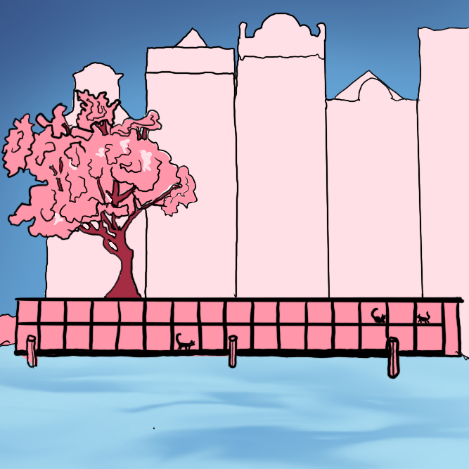

Over de Poezenboot
De Poezenboot, opgericht in 1966 met hun eerste boot in 1968, is een non-profit organisatie die geen subsidies van de gemeente Amsterdam krijgt en dus gebaseerd is op de steun van donateurs en vrijwilligers. De organisatie zet zich in om achtergelaten en zieke katten te rehabiliteren om daarna een nieuw huis te kunnen geven. De organisatie helpt zowel katten als eigenaren van katten die bijvoorbeeld geen geld hebben voor castratie of niet voor de katten kunnen zorgen. De Poezenboot, opgericht in 1966 met hun eerste boot in 1968, is een non-profit organisatie die geen subsidies van de gemeente Amsterdam krijgt en dus gebaseerd is op de steun van donateurs en vrijwilligers. De organisatie zet zich in om achtergelaten en zieke katten te rehabiliteren om daarna een nieuw huis te kunnen geven. De organisatie helpt zowel katten als eigenaren van katten die bijvoorbeeld geen geld hebben voor castratie of niet voor de katten kunnen zorgen.

Adopteer mij!
- Buzzer
- Kater
- 3,5 jaar
- Lief, sociaal en gezellig!